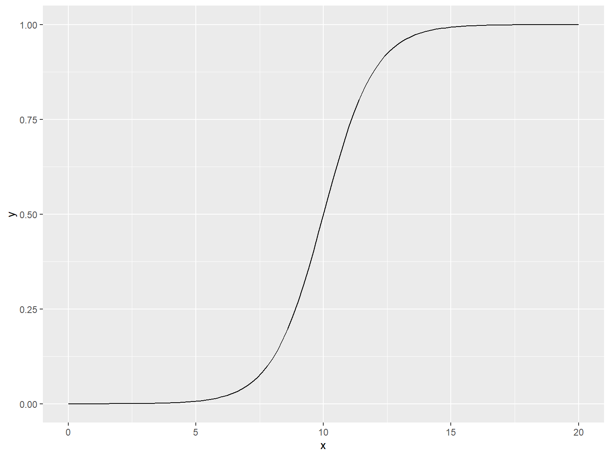

02-ggplot2 绘图基础
1 笔记与练习参考
R 可视化的内容主要来源于 [R Graphics Cookbook, 2nd edition](https://r-graphics.org/) 和 [Beautiful-Visualization-with-R](https://github.com/EasyChart/Beautiful-Visualization-with-R)(Zhang 2019)
2 准备工作
ggplot2 绘图基础需要安装 ggplot2,dplyr,gcookbook三个包，其中gcookbook包含了需要使用的数据集。
2.1 安装package
可以通过如下方式安装：
2.2 载入package
在每个R会话中，需要再运行代码之前加载这几个包：
{r，eval=false} library(tidyverse) library(gcookbook)
2.2.1 注意
运行library(tidyverse)会加载 ggplot2,dplyr等许多其他包，如果想要R会话更加流畅高效，可以分别加载ggplot2,dplyr,gcookbook等。
2.3 更新package
运行 update.packages() 可以查看那些包可以被更新，如果想要不加提示的更新说有的package，可以加入参数：ask=FALSE。
{r，eval=FALSE} update.packages(ask=FALSE)
2.3.1 注意
一般来说package的作者会发布一些新版本来修复旧版本中的问题，并提供一些新特征或功能，通常是建议将packages更新到最新版。但是有时候可能会出现一些bug或package之间的冲突，可以通过版本控制/构建虚拟环境来进行解决。
2.4 加载以符号分隔的文本文件
- 一般的加载语法
- render 包中的
read_csv()函数，这个函数的运行速度比read.csv()快很多，且更适合处理字符串、日期和时间数据。 - 如果数据文件首列没有列明：
2.5 从Excel文件中加载数据
可以使用 readxl 包中的 read_excel() 函数用于读取 .xls、.xlsx等Excel文件。
read_excel() 默认使用工作标的第一行作为列名，如果不想以第一行作为列名，可以设置参数 col_names = FALSE ，相应的，各列会被命名为 X1,X2 等。
2.6 从SPSS/SAS/Stata文件中加载数据
2.6.1 使用 haven 包中的函数
2.6.2 使用 foreign 包替代
这个同样支持 SPSS 和 Stata 数据，但是这个包更新缓慢。
它还可以支持octave/MATLAB,SYSTAT,SAS XPORT等数据的读取。
通过 ls("package:foreign") 查看所有的函数列表。
[1] "data.restore" "lookup.xport" "read.arff" "read.dbf"
[5] "read.dta" "read.epiinfo" "read.mtp" "read.octave"
[9] "read.S" "read.spss" "read.ssd" "read.systat"
[13] "read.xport" "write.arff" "write.dbf" "write.dta"
[17] "write.foreign"
2.7 链接函数和管道操作符 %>%
Expt Run Speed
001 1 1 850
002 1 2 740
003 1 3 900
004 1 4 1070
005 1 5 930
006 1 6 850
007 1 7 950
008 1 8 980
009 1 9 980
010 1 10 880
011 1 11 1000
012 1 12 980
013 1 13 930
014 1 14 650
015 1 15 760
016 1 16 810
017 1 17 1000
018 1 18 1000
019 1 19 960
020 1 20 960
021 2 1 960
022 2 2 940
023 2 3 960
024 2 4 940
025 2 5 880
026 2 6 800
027 2 7 850
028 2 8 880
029 2 9 900
030 2 10 840
031 2 11 830
032 2 12 790
033 2 13 810
034 2 14 880
035 2 15 880
036 2 16 830
037 2 17 800
038 2 18 790
039 2 19 760
040 2 20 800
041 3 1 880
042 3 2 880
043 3 3 880
044 3 4 860
045 3 5 720
046 3 6 720
047 3 7 620
048 3 8 860
049 3 9 970
050 3 10 950
051 3 11 880
052 3 12 910
053 3 13 850
054 3 14 870
055 3 15 840
056 3 16 840
057 3 17 850
058 3 18 840
059 3 19 840
060 3 20 840
061 4 1 890
062 4 2 810
063 4 3 810
064 4 4 820
065 4 5 800
066 4 6 770
067 4 7 760
068 4 8 740
069 4 9 750
070 4 10 760
071 4 11 910
072 4 12 920
073 4 13 890
074 4 14 860
075 4 15 880
076 4 16 720
077 4 17 840
078 4 18 850
079 4 19 850
080 4 20 780
081 5 1 890
082 5 2 840
083 5 3 780
084 5 4 810
085 5 5 760
086 5 6 810
087 5 7 790
088 5 8 810
089 5 9 820
090 5 10 850
091 5 11 870
092 5 12 870
093 5 13 810
094 5 14 740
095 5 15 810
096 5 16 940
097 5 17 950
098 5 18 800
099 5 19 810
100 5 20 870 Expt Run Speed
Min. :1 Min. : 1.00 Min. : 650
1st Qu.:1 1st Qu.: 5.75 1st Qu.: 850
Median :1 Median :10.50 Median : 940
Mean :1 Mean :10.50 Mean : 909
3rd Qu.:1 3rd Qu.:15.25 3rd Qu.: 980
Max. :1 Max. :20.00 Max. :1070 2.7.1 普通函数
2.8 绘制散点图

使用 ggplot2 绘制

2.9 绘制折线图

2.9.1 增加数据点和多条折线

2.9.2 ggplot2 中的 geom_line()

2.10 绘制条形图
2.10.1 使用 barplot() 函数
向 barplot() 函数传递两个参数，第一个向量用来设定条形的高度，第二个向量用来设定每个条形对应的标签（可选）；如果向量中的元素已被命名，则系统会自动使用元素的名字作为条形标签。
2.10.2 使用 ggplot2 中的 geom_col 函数

2.11 绘制直方图
使用 hist() 函数#| echo: true #| output: true #| cache: true

2.11.1 使用 ggplot2 中的 geom_histogram()
2.12 绘制箱型图
2.13 使用 plot() 函数
当 X 为因子型变量（与数值型变量对应）时，会默认绘制线形图。
当两个参数向量在同一个数据框时，也可以使用 boxplot() 函数和语法。公式语法允许用户在 x 轴上使用变量组合。
引入交互,基于多组变量的箱型图。
2.13.1 使用 ggplot2 中的 geom_boxplot() 函数
使用 interaction() 函数将分组变量组合在一起来绘制基于多组变量的箱型图。
2.14 绘制函数图像
2.14.1 使用 curve() 函数绘制函数图像
绘制用户自定义的函数图像
2.14.2 使用 ggplot2 中的 stat_function(geom = "Line") 函数

end.